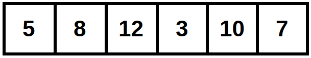
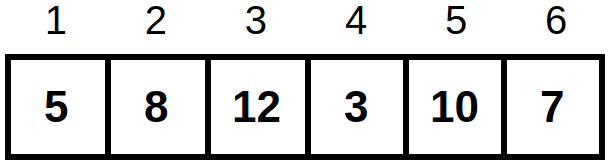

Vectores
Vector (programación)
En programación un vector es un arreglo unidimensional que contiene elementos de un solo tipo. En seguida se muestra un vector con 6 números, para acceder a los números tendríamos que indicar la posición del número que queremos.
En R las posiciones de los elementos de un vector comienzan por el número 1 como se muestra en el vector de ejemplo.
El largo de un vector indica el número de elementos que contiene, en el ejemplo tenemos que el largo del vector es de 6.
Vectores en R
Función c() (combinar)
Mediante la función c() podemos combinar valores y crear un vector.
## Combinar números para formar un vector
c(3,10,6,5,7)
## Podemos asignar el vector a una variable
vec_num <- c(3,10,6,5,7)
## Para crear un vector de caracteres se deben ingresar las variables entre comillas
vec_char <- c("A","K","Z","V","X")
## También se pueden crear vectores lógicos
vec_log <- c(FALSE,FALSE,TRUE,FALSE,TRUE)
También se pueden agregar nuevos elementos a un vector y combinar más de dos vectores.
vec_num_1 <- c(3,10,6,5,7)
## Agregar nuevos elementos a un vector
c(vec_num_1,10,6)
## Combinar los dos vectores anteriores
vec_num_2 <- c(15,20,13)
c(vec_num_1, vec_num_2)
La función typeof() se utiliza para conocer el tipo o modo de almacenamiento de cualquier objeto.
## Conocer con que tipo de objeto estamos trabajando
typeof(vec_num)
Recordemos que los vectores solo pueden contener elementos de un solo tipo. En R podemos almacenar números como caracteres, pero no podemos guardar caracteres como números. También podemos combinar números y caracteres en un vector, pero R los guardará como caracteres.
## Vector numérico como carácter
vec_num_as_char <- c("3","10","6","5","7")
## Combinar números con caracteres
vec_num_and_char <- c("A",10,7,"V",5)
Coerción Explícita
En programación la coerción permite convertir, implícita o explícitamente, un objeto a otro. Para convertrir un vector numérico a carácter se puede utilizar la función as.character() y para convertir nuevamente a número se utiliza la función as.numeric().
## Transformar un vector numérico a carácter
vec_num_as_char <- as.character(vec_num)
## Transformar un vector de carácter a numérico
vec_char_and_num <- as.numeric(vec_num_as_char)
Crear vectores de elementos consecutivos
También podemos crear vectores numéricos con el operador :, el cual generará una secuencia de números que va del primer valor hasta el segundo valor.
## Generar un vector del 1 al 5
3:10
## Crear un vector que va del 10 al 30 y asignarlo a una variable
vec_num <- 10:30
La función seq() es más flexible que el operador :, ya que permite especificar de qué manera se hará el incremento.
## Es similar al operador :
seq(5)
seq(1,10)
## La diferencia es que podemos elegir cómo será el incremento
seq(from = 3, to = 15, by = 3)
Nota: R contiene un paquete base de funciones library(help = "base"), estas pueden ser simples (un solo argumento) o más complejas (más argumentos). Por ejemplo, en la función seq() se pueden utilizar varios argumentos (Pedir ayuda a R - ?seq)
La función rep() replica valores numéricos, o texto, o los valores de un vector para un número específico de veces.
## Podemos repetir números o caracteres
rep(5, times = 10)
rep("gato", times = 5)
## Se puede repetir un vector completo
rep(c(3,10,6), times = 3)
## Se puede repetir n veces cada elemento del vector
rep(c(3,10,6), each = 3)
## Podemos hacer que cada elemento del vector se repita n veces independientemente
rep(c("gato","perro","pez"), times = c(3,5,2))